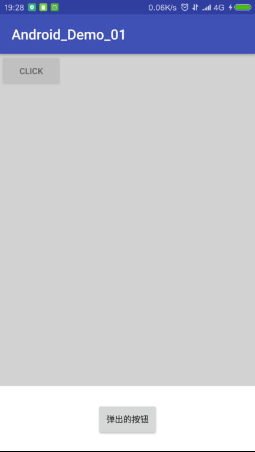
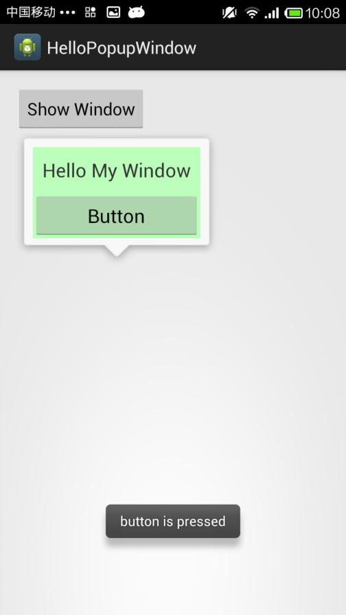

在 Android 中实现弹出层方式很多，下面介绍几种常用的
1.通过FrameLayout模拟弹出层
优点：实现简单，布局也比较好写
缺点：位置在上下左右比较好，其他复杂的布局要写大量的点击事件来阻止点击向下传递
比如实现下面的效果：

<?xml version="1.0" encoding="utf-8"?>
<FrameLayout xmlns:android="http://schemas.android.com/apk/res/android"
android:layout_width="match_parent"
android:layout_height="match_parent">
<RelativeLayout
android:layout_width="match_parent"
android:layout_height="match_parent">
<Button
android:id="@+id/but01"
android:layout_width="wrap_content"
android:layout_height="wrap_content"
android:text="Click"/>
</RelativeLayout>
<!--弹出层一定要放在最后面才会显示在最上层，同时默认隐藏-->
<LinearLayout
android:id="@+id/popouter"
android:visibility="gone"
android:layout_width="match_parent"
android:layout_height="match_parent"
android:orientation="vertical">
<LinearLayout
android:orientation="horizontal"
android:layout_width="match_parent"
android:layout_height="0dp"
android:background="#AAA"
android:alpha="0.5"
android:id="@+id/popinner1"
android:layout_weight="5">
</LinearLayout>
<LinearLayout
android:id="@+id/popinner2"
android:gravity="center"
android:layout_width="match_parent"
android:layout_height="0dp"
android:background="#FFF"
android:orientation="vertical"
android:layout_weight="1">
<Button
android:text="弹出的按钮"
android:id="@+id/but02"
android:layout_width="wrap_content"
android:layout_height="wrap_content" />
</LinearLayout>
</LinearLayout>
</FrameLayout>
@Override
protected void onCreate(Bundle savedInstanceState) {
super.onCreate(savedInstanceState);
setContentView(R.layout.activity_main);
popouter = findViewById(R.id.popouter);
popinner1 = findViewById(R.id.popinner1);
popinner2 = findViewById(R.id.popinner2);
but01 = (Button) findViewById(R.id.but01);
but02 = (Button) findViewById(R.id.but02);
but01.setOnClickListener(new View.OnClickListener() {
@Override
public void onClick(View v) {
popouter.setVisibility(View.VISIBLE);
}
});
//这是底部弹窗的外部区域，点击取消显示，同时起到阻止冒泡的作用
popinner1.setOnClickListener(new View.OnClickListener() {
@Override
public void onClick(View v) {
popouter.setVisibility(View.GONE);
}
});
//防止冒泡
popinner2.setOnClickListener(new View.OnClickListener() {
@Override
public void onClick(View v) {
//Do nothing..
}
});
but02.setOnClickListener(new View.OnClickListener() {
@Override
public void onClick(View v) {
Toast.makeText(MainActivity.this, "Hello World", Toast.LENGTH_SHORT).show();
}
});
}
2.各种Dialog
这里以Dialog为例子，系统中其他的Dialog类似
注意：官方不推荐直接使用Dialog创建对话框而是推荐使用DialogFragment
Dialog dialog = new Dialog(mContext);
dialog.setTitle("选择xxx");
Window window = dialog.getWindow();
window.setGravity(Gravity.BOTTOM|Gravity.CENTER);
//好奇怪这样可以取消外边距
//dialog.getWindow().setBackgroundDrawable(new ColorDrawable(Color.WHITE));
dialog.setContentView(LayoutInflater.from(mContext).inflate(R.layout.pop,null));
dialog.show();
3.DialogFragment
使用DialogFragment来管理对话框，当旋转屏幕和按下后退键时可以更好的管理其声明周期，它和Fragment有着基本一致的声明周期。 且DialogFragment也允许开发者把Dialog作为内嵌的组件进行重用，类似Fragment（可以在大屏幕和小屏幕显示出不同的效果）
public class MyDialog extends DialogFragment {
private Context context;
//获得context
@Override
public void onAttach(Context context) {
super.onAttach(context);
this.context = context;
}
//初始化
@Override
public View onCreateView(LayoutInflater inflater, final ViewGroup container, Bundle savedInstanceState) {
Window window = getDialog().getWindow();
//不显示标题
window.requestFeature(Window.FEATURE_NO_TITLE);
View view = inflater.inflate(R.layout.pop, container);
return view;
}
}
创建Dialog并使用
MyDialog dialog = new MyDialog();
dialog.show(getFragmentManager(), "mydialog");
4.PopupWindow
PopupWindow是一个以弹窗方式呈现的控件，可以用来显示任意视图(View)，而且会浮动在当前活动(activity)的顶部”。因此我们可以通过PopupWindow实现各种各样的弹窗效果,进行信息的展示或者是UI交互，由于PopupWindow自定义布局比较方便，而且在显示位置比较自由不受限制，因此受到众多开发者的青睐。
AlertDialog在位置显示上是固定的，而PopupWindow则相对比较随意，能够在主屏幕上的任意位置显示。
效果如下

- 构造方法
//contentView为要显示的view，width和height为宽和高，值为像素值，也可以是MATCHT_PARENT和WRAP_CONTENT
public PopupWindow(View contentView, int width, int height, boolean focusable)
public PopupWindow (Context context)
public PopupWindow(View contentView, int width, int height)
public PopupWindow(View contentView)
- 位置设置
public void showAtLocation(View parent, int gravity, int x, int y)
public void showAsDropDown(View anchor)
public void showAsDropDown(View anchor, int xoff, int yoff)
通过showAtLocation设置，parent可以为Activity中的任意一个View（最终的效果一样），会通过这个View找到其父Window，也就是Activity的Window。
| gravity，默认为Gravity.NO_GRAVITY，等效于Gravity.LEFT | Gravity.TOP |
x, y，边距。这里的x，y表示距离Window边缘的距离，方向由Gravity决定。例如：设置了Gravity.TOP，则y表示与Window上边缘的距离；而如果设置了Gravity.BOTTOM，则y表示与下边缘的距离。
如果弹窗位置超出了Window的范围，会自动处理使其处于Window中。对于屏幕(左上角0,0),窗位置超出了Window的范围，会自动处理使其处于Window中,显示范围是顶部和底部
注意使用的时候，如果设置Gravity.TOP，则要计算状态栏的高度
通过showAsDropDown(相对于组件)来设置，弹窗的位置是相对于anchor。
如果指定了xoff和yoff，则会在原有位置向右偏移xoff，向下偏移yoff。
如果指定gravity为Gravity.RIGHT，则弹窗和控件右对齐；否则左对齐。注意，计算右对齐时使用了- PopupWindow的宽度，如果指定的宽度不是固定值，则计算会失效（可以从源码中看出来）。
如果弹窗位置超出了Window的范围，会自动处理使其处于Window中。
如果anchor可以滚动，则滚动过程中，PopupWindow可以自动更新位置，跟随anchor控件。
View popView = LayoutInflater.from(this).inflate(R.layout.pop,null);
final PopupWindow popWindow = new PopupWindow(popView, ViewGroup.LayoutParams.MATCH_PARENT, ViewGroup.LayoutParams.WRAP_CONTENT, true);
popWindow.setTouchInterceptor(new View.OnTouchListener() {
@Override
public boolean onTouch(View v, MotionEvent event) {
return false;
}
});
// 如果不设置PopupWindow的背景，有些版本就会出现一个问题：无论是点击外部区域还是Back键都无法dismiss弹框
popWindow.setBackgroundDrawable(new ColorDrawable());
popWindow.showAtLocation(findViewById(R.id.outer), Gravity.BOTTOM|Gravity.CENTER_HORIZONTAL, 0, 0);
5.Toast
这是最常见的一种弹窗，用法也比较简单
Toast toast = Toast.makeText(mContext, "Hello", Toast.LENGTH_SHORT);
//设置位置
toast.setGravity(Gravity.TOP|Gravity.RIGHT,0,0);
View view =LayoutInflater.from(mContext).inflate(R.layout.pop, null);
//在原始布局上添加布局
LinearLayout toastView = (LinearLayout) toast.getView();
//这个很重要，不然宽度很小
view.setLayoutParams(new ViewGroup.LayoutParams(ViewGroup.LayoutParams.WRAP_CONTENT, ViewGroup.LayoutParams.WRAP_CONTENT));
toastView.addView(view,0);
//设置布局，会取消默认的Toast样式
//toast.setView(view);
toast.show();
6.Activity并配合Dialog主题的方式实现弹窗
建立一个样式继承Dialog主题，在Activity中指定样式
为主Activity设置这个主题后会在桌面上弹出一个弹窗，且空白部分可以看到桌面上的东西，效果不错
<style name="BaseDialog" parent="@android:style/Theme.DeviceDefault.Light.Dialog.NoActionBar">
<item name="android:windowBackground">@android:color/transparent</item>
<!--<item name="android:windowCloseOnTouchOutside">false</item>-->
<item name="android:windowAnimationStyle">@android:style/Animation</item>
<item name="android:windowIsTranslucent">false</item><!--半透明-->
<item name="android:backgroundDimEnabled">false</item><!--模糊-->
</style>
<style name="AppTheme" parent="BaseDialog">
</style>